One of the reasons why humans are handicapped in our understanding of reality is because of our reliance on the “scientific method”. It is a system based on observation. The problem with this method is that our understanding of reality is corrupted by the limits imposed by observation. Indeed, as well well know, it is the perception of the observer that changes our reality.
This is a well understood rule. If you the reader, don’t “get it”, then you need to study quantum mechanics 101. For in the last two decades the entire foundation of our understanding of reality has been turned on it’s head.
Now, this is a problem. It rally is. As we have successfully harnessed observed scientific laws to create machines and build up a civilization into the technological age. How can our understanding of reality be so wrong?
Let’s take a look at this.
Introduction
Our society, and our technology has been built up over the last few centuries based on the application of the fundamentals of Newtonian Physical law. He have airplanes that fly in the sky, rockets that fly to the moon, buildings that tower into the heavens, and elevators that carry us skyward. How can all that be wrong?
I am reminded of an event while I was in High School. I was a member of the school Golf team. I wasn’t that good at it, but it did allow me to get out and socialize with my friends. Now, one day we had a Golf coach come over and help us with our drives. This is where you take a wooden club and try to hit the ball as far as possible, in the direction you intend, without having any deviation from it’s trajectory. It sounds easy, but it wasn’t. Not really.
He came up to me and watched me swing. He stood beside me for about ten minutes watching me. Then he pulled me aside.
He told me that while my stance, my swing, my movements could hit the ball reasonably well, that was the extent of it. He told me that I had plateaued. I was doing the best that I could by using the technique that I was utilizing.
I could go no further.
As I tried to hit the ball harder, as I tried to focus better, as I tried to ease into my swing, I could never improve. I was at my limits.
He then taught me that I did not need to hit the ball so hard to get the distance. He told me that everything was in how I swung, and how I moved. He radically changed my entire posture and my swing. It was completely different than anything that I was doing previously.
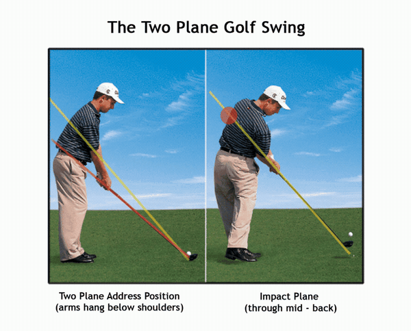
And, you know what?
I hit the ball better, the balls traveled further and stayed on course without deviation. There were no “hooks”, and no “slices”. Everything was perfect. He was correct. I could only go so far with my (now, admittedly) crude application of my driving stance.
Science and technology are like that. Newtonian physics can only take us so far. To really master our reality, we need to fully understand and master our universe and the laws that control it. We need to look at how things work beyond the limits of our observation.
To prove that Newtonian Physics does not represent the reality that we inhabit, let’s look at four paradoxes that clearly illustrate these limitations…
Paradoxes Involving the Second Law of Thermodynamics
“The tendency for entropy to increase in isolated systems is expressed in the second law of thermodynamics -- perhaps the most pessimistic and amoral formulation in all human thought.” --Greg Hill and Kerry Thornley, Principia Discordia (1965)
Unknown to most students of the sciences, the laws inherent in Newtonian Physics are not immutable and fixed (…though they are most certainly taught that in school.). That is because many of them are derived empirically.
Empirical evidence, also known as sensory experience, is the information received by means of the senses, particularly by observation and documentation of patterns and behavior through experimentation. -Wikipedia
We treat them as fixed and immutable, but that is a genuine disservice to mankind. For they are not.
They are still just and only theories that best fit the observed phenomena of the observed physical universe. We need to remember this. They were all derived through empirical observation and calculated accordingly. This can lead to plenty of problems and is perhaps one of the reasons why FTL (faster than light travel) has been so problematic in implementation.
Since Einstein, physicists have been working on a theory of everything (TOE). Logic dictates that for a true TOE, the TOE must be able to propose from first principles, why conservation of mass-energy and conservation of momentum hold. If these theories cannot, they cannot be TOEs. Unfortunately all existing TOEs have these conservation laws as their starting axioms, and therefore, are not true TOEs. The importance of this requirement is that if we cannot explain why conservation of momentum is true, like Einstein did with LFT, how do we know how to apply this in developing interstellar propulsion engines?
We need to treat them as they really are and recognize from whence they were derived. Let’s just look at one of these “rigid and immutable” laws that the entire foundation of science has been built upon. Let’s look at the second law of Thermodynamics.
“The difference between science and the fuzzy subjects is that science requires reasoning, while those other subjects merely require scholarship.” -Robert Heinlein in: Time Enough for Love: the lives of Lazarus Long; a novel , (1973), p. 366
The second law of thermodynamics states that whenever energy is transformed from one form to another form, entropy increases and energy decreases. (In other words: over time, differences in temperature, pressure, and density tend to even out in a horizontal plane, but not in a vertical plane due to the force of gravity.)
For example, density and pressure do not even out in a vertical plane, and nor does temperature because gravity acts on individual molecules, and this means molecular kinetic energy interchanges with gravitational potential energy in free path motion between collisions.
Everyone needs to recognize the foundations for this law. It is derived through experimental observation and not a mathematical proof. (Surprise!) The second law of thermodynamics is empirical. It has no fully satisfactory theoretical proof.
This being the case, its absolute validity depends upon its continued experimental verification in all the thermodynamic regimes; all of them.
To this end, over the years, physical processes involving broken symmetries have been standard touchstones by which its validity has been tested. Each time this “immutable” law has been challenged; paradoxes have cropped up, and immediately ignored. The problems that we have so discovered suddenly become ignored. It is as if they do not matter.
This is disingenuous.
As the paradoxes point towards directions that we need to resolve so we can better understand the nature of the universe around us. It is how we learn. It is how we grow, and expand our science. The thing is, it’s not just one or two “small” paradoxes, but multiple paradoxes that shatter the fundamental bedrock of the Newtonian belief structure.
Introduction to Four Paradoxes
Let’s look at four such paradoxes.
In each paradox, the (task directed) “universe” consists of an infinite isothermal heat bath in which is immersed a blackbody cavity. Within each cavity, steady-state, non-equilibrium thermodynamic processes create spontaneous asymmetric momentum fluxes which are harnessed to do steady-state work.
If one demands the first law of thermodynamics is satisfied by these systems, then apparent contradictions with the second law of thermodynamics result.
The reader should not be too overwhelmed by the unfamiliar terminology. All of this is standard engineering fare for the initiated. This is how engineers talk and communicate to each other. We establish a basic “playing field” from which we can build and create our particular state for discussion. So, if you want to disparage my contention that MWI exists, and that transports have been available to egress for the last fifty some years, then show me how my argument is facetious. Prove to me that Newtonian Physics can be used to prove that quantum Physics does not apply on the macro scale. Solve these paradoxes.
The reader should recognize that none of this is new.
I am not the first person to “discover” these paradoxes, nor am I the first to address them. Indeed, there have been many laboratory experiments and numerical simulations that have corroborated theoretical predictions and have failed to resolve the paradoxes in favor of the second law. Many tests, and many theories, but no solutions.
To this point, it can be shown that broken symmetry in each of these four systems’ thermodynamic properties allows asymmetric momentum fluxes to arise spontaneously and that these fluxes can be harnessed to perform work utilizing a second broken symmetry in each system’s geometry.
We can show… that a broken symmetry…in each of these examples… thermodynamic properties… allow… asymmetric momentum fluxes… to occur, and…thus work can be observed occurring.
Paradoxes should never be discounted, as they are critically important in understanding how the universe works around us. I argue the point that by illuminating the characteristics shared by these paradoxes, it is hoped that their resolution can and will be expedited.
The reader might think that asymmetries such as these are thermodynamically forbidden and that each system must relax to an equilibrium characterized by spatial homogeneity.
This is not the case.
In fact, “equilibrium” does not at all forbid spatial gradients so long as they are steady-state ones. For example, the asymmetric momentum fluxes to be introduced shortly (in this post) in Systems II, III, and IV are no more than steady-state pressure gradients. Equilibrium (steady-state) pressure gradients are quite ubiquitous in nature.
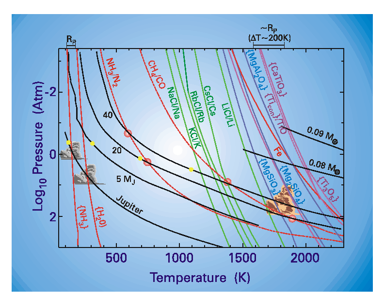
Temperature-Pressure Profiles of Brown Dwarfs and Giant Planets, with Gas Equilibrium and Condensation Curves for Several Major Species.
For instance, they are standard features of gravitationally-bound, isothermal, static atmospheres on idealized planets. In a uniform gravitational field, one can write the gas pressure as a function of vertical height, z, as p(z)= poexp[-mg(z-zo)/kT], where m is the mass of the gas molecule, kT is the thermal energy, g is the local gravitational acceleration, and pois a fiduciary pressure.
Clearly, this atmosphere possesses a vertical pressure gradient at equilibrium. Similarly, the pressure gradients in Systems II-IV are steady-state structures, but unlike the atmospheric gradient which is static and due to a static potential gradient (gravity), these pressure gradients are dynamically maintained by the continuous effluxes from two surfaces having different activities toward the cavity gas. Furthermore, these pressure gradients can do work.
Let’s look at the four paradoxes and briefly review them;
The Four Paradoxes
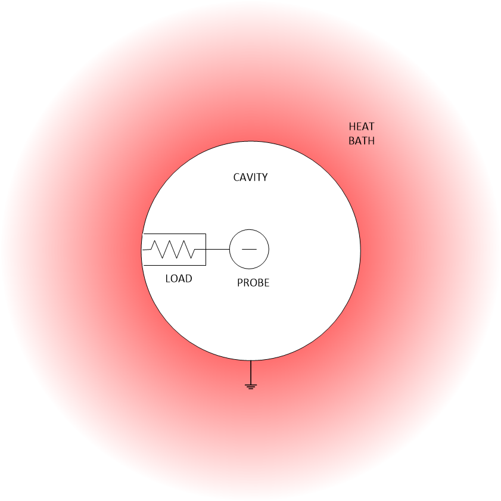
System I
The system I consists of a blackbody cavity containing a low-density plasma and an electrically conducting probe connected to the walls through a load, as shown in the figure above. The load may be conservative (e.g. a motor) or dissipative (e.g. a resistor).
The probe and load are small enough to represent minor perturbations to the cavity properties.
The walls are grounded to the heat bath both thermally and electrically (Vground =0). The potential between the bulk plasma and the cavity walls – the plasma potential, Vp – may be positive or negative depending on the work function and temperature of the walls, and the plasma type and concentration.
For an electron-rich plasma and in the absence of any net current to the plasma or walls, Vp may be estimated by equating the Richardson emission, JR from the walls to random electron flow from the plasma into the walls:
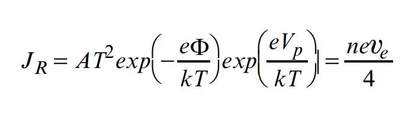
Here φ is the wall’s work function, T is temperature, Vp is the plasma potential, ѵe is the average electron thermal speed, k is the Boltzmann constant, me is the electron mass, n is the plasma particle density, and A is the Richardson constant (about 6-12 x 105(A/m2K2) for pure metals).
Under either equilibrium or non-equilibrium conditions, Vp will be non-zero except for very specific plasma parameters; in particular, Vp = 0 at the critical density, nc = (4AT 2/eѵe)exp [-eφ/kT], as derived from Eq. (1) above.
The probe will achieve a potential with respect to the plasma and walls depending on its temperature, resistance to ground (load resistance, RL), and the current to it. Since it is nearly in thermal equilibrium with the walls, the probe is self-emissive and, therefore, electrically floats near the plasma potential so long as RLis large. If Vp ≠ 0, a current can flow continuously from the probe, through the load, to ground. This current represents an asymmetric momentum flux.
The generated power may be expressed as;
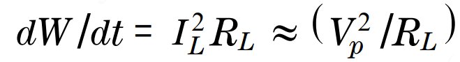
The entropy production rate is;
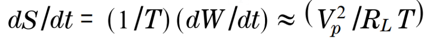
this will be positive (negative) for a purely dissipative (conservative) load. Laboratory experiments corroborate this effect.
Note: this paradox is not limited to systems with thermionically emitting walls and probe; any plasma with a non-zero floating potential appears viable. The paradox can be brought into sharper relief by placing as witch between the probe and the load. When the switch is open, the probe is physically disconnected from the walls (ground) and will electrically charge as a capacitor to the plasma floating potential. When the switch is closed, the probe will discharge as a capacitor through the load and plasma, achieving the non-zero voltage depicted. With an ideal switch, this charging and discharging of the probe through the load can be repeated indefinitely.
If this system does steady-state work on the load while maintaining spatially steady-state temperature and species concentration profiles, and if the first law of thermodynamics is satisfied, then a paradox involving the second law naturally develops.
Formally, the first law states:
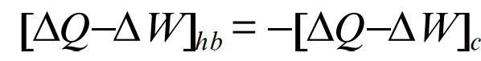
Where []hb refers to the heat bath and []c refers to the cavity. The heat bath supplies heat, but does no work, so ΔWhb =0.
If the load is conservative and each part of the cavity is at a steady state temperature, then ΔQc=0. (It is assumed, without further justification, that there are no net phase changes or chemical reactions in the cavity.)
Returning to the first law, since ΔWhb =0 and ΔQc=0, this leaves ΔQhb = ΔWc. The cavity does positive work, so ΔWc= ΔQhb< 0; in other words, the work performed by the load is drawn as heat from the heat bath, a reasonable result.
Here's a great opportunity to pull out an entropy-Pressure diagram out of some old text books. I don't get this opportunity often, so I relish the opportunity as it present's itself.
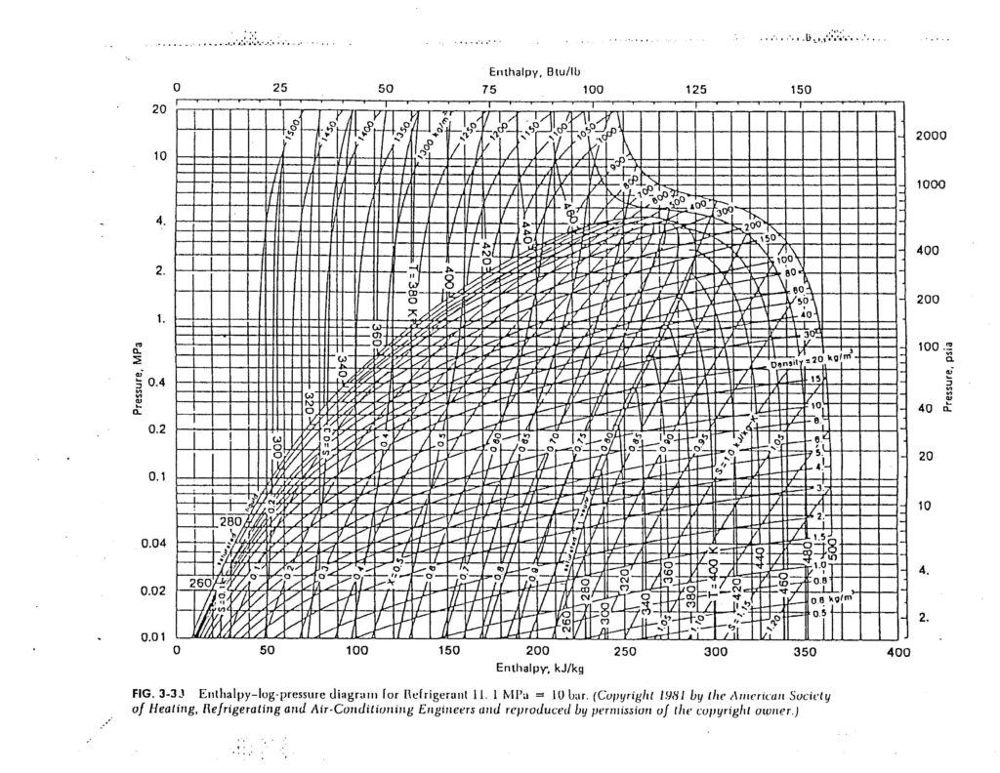
Now consider the second law. Entropy is an additive thermodynamic quantity so the entropy change for the universe can be written:
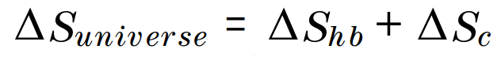
Since ΔQc = 0, one has for the cavity, ΔSc = ΔQc /T = 0. Equivalently, one may argue that entropy is a state function and the closed cavity is in a steady state – having no net phase changes, chemical reactions, temperature or volume changes, the number of microstates available to it is fixed – thus the entropy of the cavity is time invariant, and so ΔSc = 0.) With ΔSc = 0, one is left with:
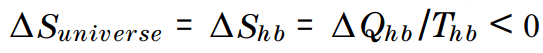
This violates the second law of thermodynamics, namely that for any spontaneous thermodynamic process, ΔSUniverse≥ 0. If one replaces RL with a dissipative load, the second law is violated still, since a forbidden, permanent temperature gradient has been established between the load and the cavity (Tload> Tc).
Note that this system is not in thermal equilibrium; this process is irreversible. In order to use validly equilibrium thermodynamic relations, the work must be performed “slowly.”
This can be achieved to any degree of precision desired by adjusting the load resistance. Similar arguments establish the remaining three paradoxes. Note also, neither this system nor the other three utilize standard thermodynamic cycles or a low temperature heat reservoir.
System II
Paradoxical system II is a mechanical analog to system I. It too, it consists of a blackbody cavity surrounded by the heat bath. The cavity contains a low density ionizable gas, B, and a frictionless, two-sided piston (See Figure below).
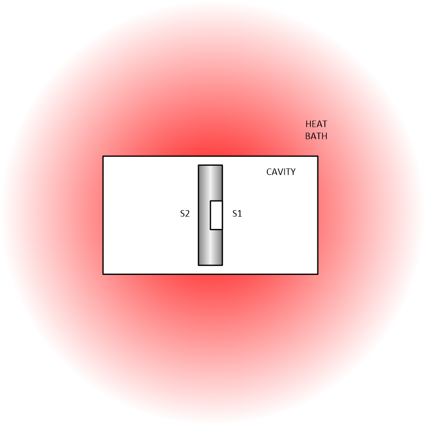
As before, Richardson emission greatly exceeds ion emission for all surfaces, giving an electron-rich plasma with a negative plasma potential. The majority of the piston is of identical composition as the walls (surface type 2, S2), however, on one piston face is a small patch having a different work function (surface type 1, S1). It is small in the sense that it is relatively unperturbing to global plasma properties.
The work functions of S1 and S2 and the ionization potential of B are ordered as: φ1 ≥~ I. P. >φ2.
Plasma production is straightforward: electrons are “ boiled” out of the metal (Richardson emission) and ions, created by surface ionization, are accelerated off the metal surface by the electron negative space charge. Ions, in turn, ease the electrons’ space charge impediment, thus releasing a quasi-neutral plasma from the surface. Actually, if Vp< 0, this is essentially a charge-neutralized, low-energy ion beam leaving the surface. In fact, this plasma can be roughly considered to be an unmagnetized, three-dimensional Q-plasma with a sliding hot plate.
The ordering φ1 ≥~ I. P. >φ2allows, with appropriate plasma density and temperature, and surface areas ((SA)2>>(SA)1), the following: surface 1 ionizes B well and recombines it poorly while surface 2 ionizes B poorly, but recombines B well.
Surface 2 dominates plasma properties by virtue of its greater surface area ((SA)2>> (SA)1), therefore, the net flux of B to any surface is predominantly neutral B. Surface 1 will be relatively unperturbing to cavity plasma conditions if the S1 ion current into the plasma is much less than the total S2 ion current. The electron emission off S2 exceeds that off S1 by a factor exp[(φ2-φ1)/kT]. The electron current density from each surface is given by Eq. (1) above.
Because of the differences between neutral, electronic, and ionic masses and the different currents of each leaving S1 and S2, a steady-state asymmetric momentum flux density (a “ net pressure difference,” ΔP), is sustained between piston faces. It has been shown that this pressure difference is roughly
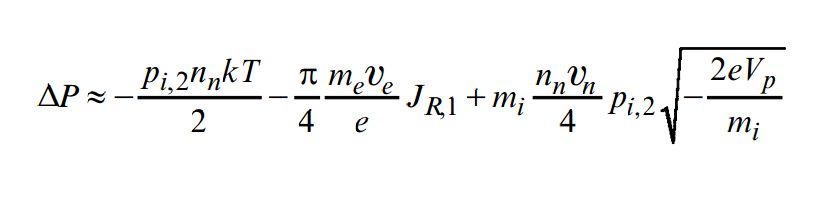
where pi,2is the ionization probability of B on S2, nn is the neutral density, JR,1is the Richardson current density from S1, mi is the ion mass, and ѵn is the neutral thermal velocity.
The first, second, and third terms represent neutral, electronic, and ionic pressures, respectively. Laboratory experiments corroborate steady-state differential thermionic emission from different surfaces under blackbody conditions. Numerical simulations, using realistic physical parameters, indicate the pressure effect is small, but significant. If the piston moves slowly (ѵpiston<<ѵn) and performs work quasi-statically, it generates steady-state
Ref; Sheehan, D. P. (1996). Phys. Plasmas, 3, 104.
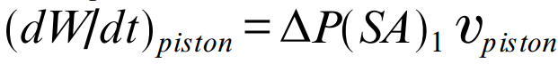
and produces negative entropy at the rate,
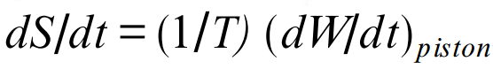
Notice that, even in the absence of a plasma potential, Vp, the paradoxical effect persists so long as the ionization probability of the two surfaces are distinct.
System III
Paradoxical system III is the chemical-mechanical analog of system II. It consists of a blackbody cavity with piston into which is introduced a small quantity of dimeric gas, A2. The cavity walls and piston are made from a single material, surface type 2 (S2), except for a small patch of a different material, surface type 1 (S1), on one piston face, as shown in the figure for System II. Note S1 and S2 here are distinct from those in system II.) The chemical model for this system assumes the following:
- the gas phase density is low such that gas phase collisions are rare compared with gas-surface collisions, however, it is sufficiently high that rms pressure fluctuations are small compared with the average pressure;
- all species contacting a surface stick and later leave in thermal equilibrium with the surface;
- the only relevant surface processes are adsorption, desorption, dissociation, and recombination;
- the fractional surface coverage is low, so adsorptionand desorption are first order processes;
- A2 and A are highly mobile on all surfaces and may be treated as a two-dimensional gas; and
- atomic and molecular species are retained sufficiently long on any surface to achieve close to chemical thermal equilibrium in the surface phase.
These conditions are physically realistic and have been shown to be self-consistent[i]. For these conditions, it can be shown that, in principle, S1and S2 can simultaneously desorb different ratios of A and A2 in a steady-state fashion. However, since two A’s together impart 21/2 times the impulse to the piston as does a single A2 (all leaving in thermal equilibrium with the surface),asymmetric momentum fluxes can be sustained between the piston surfaces. (Another way to view this is: equipartition of energy does not imply equipartition of linear momentum.) The pressure imbalance on the piston faces can be used to perform work in a similar manner to system II.
Ref: Sheehan, D. P. (1998). Phys. Rev. E., 57, 6 (in press).
For low surface coverage where desorption is a first order process, the desorption rate ratio for A and A2, Rdes (A2 ) /Rdes (A)≡α, is given by:
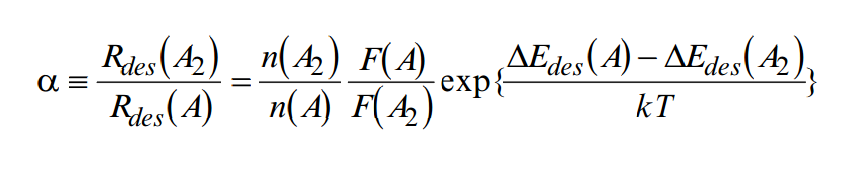
Here ΔEdes(Aj) is the desorption energy of Aj; n(Aj) is the surface concentrate of
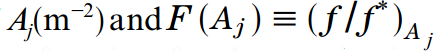
is a ratio of partition functions. f is the partition function for the species in equilibrium with the surface, and f *is the species-surface partition function in its activated states.
For real surface reactions, F(Aj) typically ranges between roughly 10-3-104. Experimental values of desorption energy, ΔEdes, typically range from about 1 kJ/mol for weak physisorption up to about 400 kJ/mole for strong chemisorption.
The ratio α varies as 0≤α≤∞depending on the values of the several variables in Eq. (3). Experimental signatures of differential α’s (some under quasi-blackbody conditions) are abundant.
If α1≠α2, and if the instantaneous fluxes of A and A2 from S2 each greatly exceed those from S1 so thatS1 can be treated as an impurity (i.e. Rdes(2,A2)/Rdes(1,A2) >> (SA)1/(SA)2andRdes(2,A )/Rdes(1, A) >> (SA)1/(SA)2, then a steady-state difference in momentum flux density (net pressure difference, ΔP) can be sustained between piston faces. Here (SA)jis the surface area of the jth surface.
This pressure difference can be expressed:
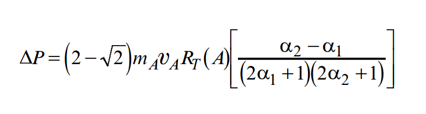
where RT(A) is the total flux density of A onto a surface,
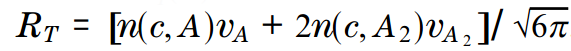
Here n(c,Aj) is the cavity concentration of A or A2. In the limit that α2 >> 1 >>α1, the greatest pressure difference is obtained; it is roughly:
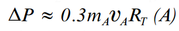
This pressure difference is steady-state since the dynamic chemical processes giving rise to it are steady state. If this pressure difference is significantly greater than the statistical pressure fluctuations in the cavity, then, in principle, it can be exploited to do steady-state work. The power and entropy production rates here are the same as for system II. As for system II, the piston must move slowly compared with the thermal velocity of gaseous A2. Note that, when the piston moves, the volume and surface phases for this system are not in equilibrium; in fact, they are in steady-state non-equilibrium.
This chemical system has been simulated numerically. Closed-form, analyticrate equations have been developed and solved simultaneously using realistic physical parameters. Solutions confirm the possibility of this paradoxical effect; it is probably small – but significant – and appears viable over a wide range of physically accessible parameters. Laboratory systems displaying this effect are currently being sought.
Ref: Sheehan, D. P. (1998). Phys. Rev. E., 57, 6 (in press).
System IV
To introduce System IV, consider an everyday scenario: from the same height, drop a glass marble onto two different surfaces, for instance, a hardwood floor and a soft rug. The marble in elastically rebounds to different heights, demonstrating the different inelastic (endoergic) responses of the two surfaces.
Inherently, these collisions are non-equilibrium processes.
Analogous non-equilibrium behavior is observed on the atomic scale: it is well known that hyperthermal gas-surface collisions can excite energy states associated with internal degrees of freedom of either the collider or target – e.g. rotational, vibrational and electronic modes, phonons, plasmons – there by rendering the collisions inelastic.
In fact, a number of standard surface diagnostics are based upon just such characteristic inelastic responses. In contrast, at thermal equilibrium gas-surface collisions must, on average, be elastic, otherwise more direct contradictions with the second law arise.
(“ Hyperthermal” collisions are those with impact energies far above thermal energies - typically a few tenths of an eV up to about 100 eV in energy.)
Studies indicate energy transfer efficiencies from hyperthermal colliders to targets can range from a few percent to over ninety percent of incident atom kinetic energies. Motivated by these observations, a simple, idealized system is considered:
Ref; Zeiri Y. & Lucchese, R. R. (1991). J. Chem Phys., 94, 4055.
System IV; a strongly gravitating rod, whose ends have different inelastic responses to hyperthermal impacts by a particular gas, is placed at rest in a blackbody cavity with that gas.
When steady state is reached, gas continuously falls hyperthermaly onto the rod, inelastically rebounds to different degrees from the rod ends, and is rethermalized in the blackbody cavity.
The particle fluxes to and from both rod ends are identical, but the momentum fluxes are different, giving rise to a net force on the rod. If released, the rod accelerates in the direction of the net force and, in principle, can be harnessed to do mechanical work.
The idealized system consists of:
- an infinite heat bath;
- a large, spherical blackbody cavity;
- a low density gas in the cavity; and
- a rod gravitator.
The rod (length 2L g) has symmetric mass densityᵨ(x) = ᵨ(-x) about its center at x = 0, but its end surfaces (S1 and S2) are composed of two materials distinct in their inelastic responses to gas atoms (mass mA). In other words, forS1 and S2 one can write the inelastic response functions as distinct:
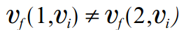
The inelastic response function for surface j, ѵf (j,ѵi), maps the velocity of a particle before impact, ѵi, onto its velocity after impact, ѵf. The rod represents a minor perturbation to the overall cavity properties. Its gravitational scattering length Ls is much smaller than the cavity scale length, Lc. As a result, Ns, the ratio of the average number of wall collisions a gas atom undergoes (Nwall) to the average number of rod collisions (Nrod) it undergoes, is large; that is,
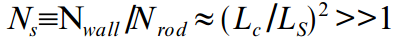
Gas colliding with the cavity walls, regardless of its history, is diffusely scattered (for rough walls), well mixed, and fully thermalized within a few wall collisions.
For the rod at rest at the cavity center then, gas populations in falling from the walls to S1 and S2 maybe taken to be fully thermal and identical in temperature and density. In terms of the velocity distribution functions, this is:
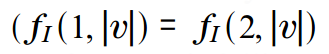
And
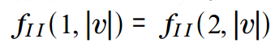
The velocity distributions for gas in falling from x = ±Lc are half-Maxwelians, fI(j,ѵ). When they arrive at S1 and S2 they are velocity space compressed due to their falls through the gravitational potential, becoming fI(j,ѵ).
The rebounding distributions, fIII(j,ѵ), are distinct for the two surfaces.
After climbing out of the gravitational well, the velocity space expanded distributions fIV(j,ѵ) are rethermalized at the walls.
Gravitationally bound gas, fV(j,ѵ), forms an atmosphere around the rod.
The cavity contains blackbody radiation and gas whose mean free path is comparable to or greater than the distance between the rod and the walls.
Gas kinetic energy fluxes are much smaller than radiative energy fluxes; in other words, blackbody radiation dominates the system’s energy transfers.
Small surface temperature variations arising from inelastic collisions are quickly smoothed out by compensating radiative in- or effluxes. This model is valid over a wide range of physically realistic parameters and is well approximated by a planet-sized gravitator in a low density gas housed in blackbody cavity of solar system dimensions. In the following analysis, the rod will be treated one dimensionally; however, it can be shown, in retrospect, that the following results generalize to two and three dimensions.
The net force on the stationary rod can be determined from conservation of linear momentum, accounting for both incident and reflected particle fluxes. As discussed previously, since
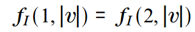
And
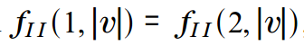
by symmetry, the net force on the rod (at rest) due to incident gas is zero. However, the net force due to the inelastically reflecting gas need not be zero since equations
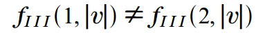
And
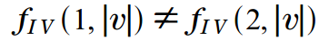
state otherwise.
Consider the S1 rod end. The incident particle flux density which in falls from the walls at x = – Lcto S1 at x = -Lg is
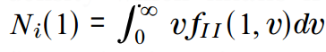
From conservation of mass, the incident particle flux density is equal to the reflected particle flux density:
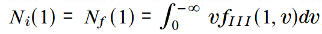
The differential momentum flux density for the rebounding gas (taken at x = – Lg ) is
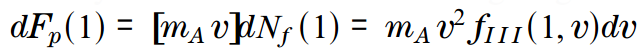
Only atoms with
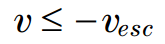
will climb completely out of the gravitational potential well; the remainder will fall back to the rod, form an atmosphere, and eventually evaporate as the
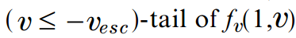
Accounting for the gravitational back-reaction of the gas on the rod as it climbs out of the gravitational well, the total average
steady-state momentum flux density on surface S1 is:
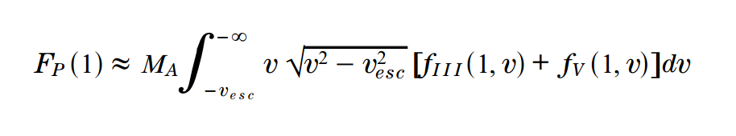
The approximation (≈) is due to the finite cavity size; in the limit of -Lc→-∞, the expression becomes exact. For S2, – ѵesc→+ѵescand -∞→ +∞ in the limits of integration.
In the limit of a tenuous atmosphere, the momentum flux density due to the ( |ѵ| ≥|ѵesc | )-tail of fѵ(j,ѵ) is negligible. In fact, fѵ(j,ѵ)is negligible for systems with [1] low gas densities, nA, and with [2] inelastic response functions, ff(j,ѵi)which do not shift |ѵf | significantly below |ѵesc | .
By conservation of linear momentum, the average net momentum flux density(pressure) on the rod as a whole is;
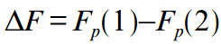
if
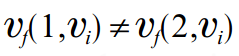
In the velocity range of the colliding gas, then except under extremely contrived conditions, one has ΔF ≠0.
In other words, under steady-state thermodynamic conditions, a stationary, gravitating rod with different inelastic responses on its ends can, in principle, experience a non-zero, steady-state force when placed in a suitable gas.
If the rod is released, this force can be harnessed to do work at the expense of the heat bath, as discussed previously.
Two Broken Symmetries
Each paradox arises due to a synergism between two broken symmetries -one thermodynamic and one geometric. Each is necessary, but alone insufficient.
A broken geometric symmetry is constructed into each system. System I possesses almost perfect radial symmetry; this symmetry is broken by the electrical connection from the probe, through the load, to ground.
In the case of disconnection, the probe will randomly and radially receive current from the walls through the plasma and radially and randomly return this current to the walls back through the plasma. This is the equilibrium (fully symmetric) case.
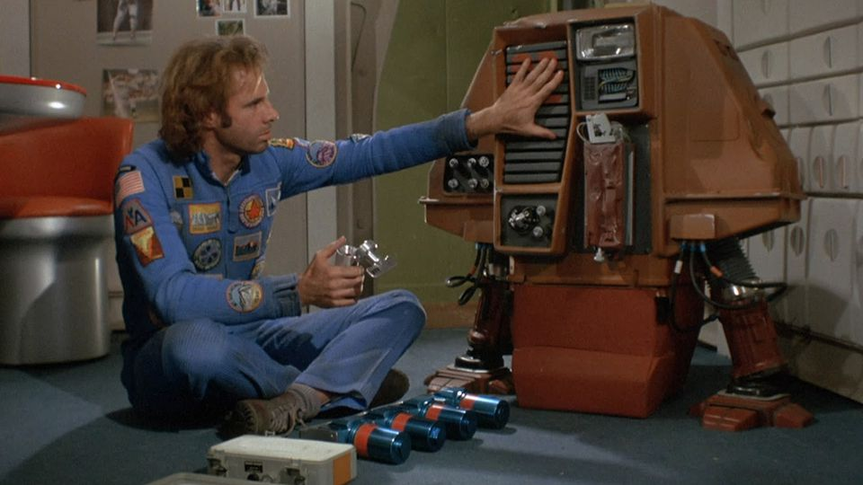
If the load is connected, however, the probe’s return current has an alternate path to ground and the radial symmetry of the current flow is broken. Analogously, in systems II-IV, the piston’s constrained, one-dimensional motion effectively reduces (breaks) the systems’ three dimensionality to one.
These broken geometric symmetries are necessary to exploit each system’s broken thermodynamic symmetry. The latter may be identified by observing which thermodynamic property, if symmetrized, destroys the paradoxical effect.
1
In system I, the effect is lost if the plasma potential is symmetrized to ѵp = 0. (It is assumed here that for self-emissive probes the floating potential for a probe is equal to the plasma potential.) This can be made zero in several ways including :
- ceasing plasma production;
- achieving the critical plasma density, nc; or
- creating a mass-symmetric plasma- a negative ion plasma.
More generally, the non-zero Vp can be considered due to either
- the fundamental mass asymmetry between electron and ions; or
- that surfaces preferentially emit electrons or ions depending on values of their surface temperature and work function, and gas ionization potential.
2
In system II, the paradoxical effect is lost if the work functions of S1 and S2 are equal: φ1 =φ2. Then, the electronic, ionic and neutral momentum flux densities from all surfaces are identical, rendering zero the pressure differential between piston faces.
In general, the symmetry condition: φ1 =φ2, is difficult to achieve unless S1 and S2 are the same material- a trivial case.
3
In system III, the effect is lost if the desorption rate ratios for S1 and S2 are equal: α1 =α2. As seen from equation 3 above, this requires either fine tuning in values of surface density, partition functions, and desorption energies, or that S1 and S2 be identical substances.
As with φ in system II, the symmetry condition,α1 =α2, is difficult to achieve unless S1 and S2 are identical.
4
In system IV, the effect is lost ifѵf(1,ѵi) = ѵf(2,ѵi). This is most easily accomplished by symmetrizing the rod’s composition.
Each broken thermodynamic symmetry (in ѵp,φ, α, or ѵf(j,vi)) occurs naturally under either equilibrium or non-equilibrium conditions and allows momentum flux asymmetries to arise. Via the broken geometry symmetry, the broken thermodynamic symmetry is exploited to do work.
Both broken symmetries appear to be necessary since the thermodynamic quantities ѵp,φ, α, and ѵf(j,vi)are spatially homogeneous (independent of spatial variables);therefore, by themselves they are insufficient to direct momentum fluxes to do work. This requires the broken spatial (geometric) symmetry; in System I it is accomplished by an electrical conductor and in Systems II-IV by a piston.
Derived Conjecture
From these four examples, a conjecture is induced:
Given a spatially homogeneous thermodynamic property that causes a macroscopic asymmetric momentum flux (under equilibrium or non-equilibrium conditions), a second broken geometric symmetry is necessary and, if suitably arranged, can be sufficient to do work solely at the expense of a heat bath in violation of the second law.
I offer this conjecture to the reader.
A solution to these paradoxical conditions clearly lies in support of the quantum technologies by which my narrative has been written. To adequately “debunk” or “disparage” my narrative one must find solutions to the four paradoxical conditions that are NOT supportive of my experiences.
Conclusions
“Most of the important things in the world have been accomplished by people who have kept on trying when there seemed to be no hope at all.” -Dale Carnegie
Newtonian Physics is quite useful. However, it does not adequately describe our reality. Quantum Physics does.
I was a member of MAJestic for over thirty years and experienced reality on a level that far exceeds the conventional narrative as promoted by the service-to-self oligarchs that rule mankind. For mankind to grow and advance, we need to see how we all ACTUALLY fit in our reality. This means accepting our “spiritual side”; the side that follows the laws of Quantum mechanics.
This post points out how absolutely deluded we are, and how much we actually do not know. So, instead of saying “experts have shown…”, or “experts have proven…”, or “a blue ribbon panel has confirmed…” do it yourself.
Everything you need is right here in this post. Don’t rely on the “experts”, they are just paid “yes men”.
Take Aways
- Newtonian Physics is unable to describe our reality.
- Quantum Mechanics is able to describe our reality.
- As such, utility of quantum mechanics and the principles inherent within it can enable “God Like” powers and abilities.
Which means…
- The limitations of time does not exist when utilizing Quantum Mechanics.
- The limitations of distance does not exist when utilizing Quantum Mechanics.
- The limitations of reality world-lines does not exist when utilizing Quantum Mechanics principles.
FAQ
Q: What is the fundamental cause behind the Newtonian paradoxes?
A: Each paradox arises due to a synergism between two broken symmetries. One of which is thermodynamic and one which is geometric in nature.
Q: Why deal with idealized systems?
A: Idealized systems is a great way to simplify the calculations and understanding of complex systems. In this case, the idealized systems are utilized to prove that there are paradoxes within the empirically derived Newtonian laws. It’s a convenient artifice that is useful at this time.
Q: What is a Broken Symmetry?
A: From Wikipedia; In physics, symmetry breaking is a phenomenon in which (infinitesimally) small fluctuations acting on a system crossing a critical point decide the system’s fate, by determining which branch of a bifurcation is taken. To an outside observer unaware of the fluctuations (or “noise“), the choice will appear arbitrary. This process is called symmetry “breaking”, because such transitions usually bring the system from a symmetric but disorderly state into one or more definite states. Symmetry breaking is thought to play a major role in pattern formation.
Other Links
- Four Paradoxes Involving the Second Law of Thermodynamics
- Second Law of Thermodynamics Violated
- Another paradox involving the second law of thermodynamics
- How often do quantum systems violate the second law
- Four Paradoxes Involving the Second Law of Thermodynamics
End Notes
Acknowledgement; the inspiration and bulk of this writing is derived from the great Mr. D. P. SHEEHAN; Department of Physics, University of San Diego, San Diego, CA 92110. It is based upon his paper titled; “Four Paradoxes Involving the Second Law of Thermodynamics”. This work was supported by a 1995 University of San Diego (USD) Faculty Research grant, and a 1996-97 USD University Professorship and a 1997 NASA-ASEE Faculty Fellowship. The author thanks Drs. William F. Sheehan and Jack Opdycke for illuminating discussions and M. P. and P. C. J. Sheehan for their inspiration. Journal of Scientific Exploration, Vol. 12, No. 2, pp. 303±314, 1998.
MAJestic Related Posts – Training
These are posts and articles that revolve around how I was recruited for MAJestic and my training. Also discussed is the nature of secret programs. I really do not know why the organization was kept so secret. It really wasn’t because of any kind of military concern, and the technologies were way too involved for any kind of information transfer. The only conclusion that I can come to is that we were obligated to maintain secrecy at the behalf of our extraterrestrial benefactors.


MAJestic Related Posts – Our Universe
These particular posts are concerned about the universe that we are all part of. Being entangled as I was, and involved in the crazy things that I was, I was given some insight. This insight wasn’t anything super special. Rather it offered me perception along with advantage. Here, I try to impart some of that knowledge through discussion.
Enjoy.


MAJestic Related Posts – World-Line Travel
These posts are related to “reality slides”. Other more common terms are “world-line travel”, or the MWI. What people fail to grasp is that when a person has the ability to slide into a different reality (pass into a different world-line), they are able to “touch” Heaven to some extent. Here are posts that cover this topic.


John Titor Related Posts
Another person, collectively known by the identity of “John Titor” claimed to utilize world-line (MWI egress) travel to collect artifacts from the past. He is an interesting subject to discuss. Here we have multiple posts in this regard.
They are;